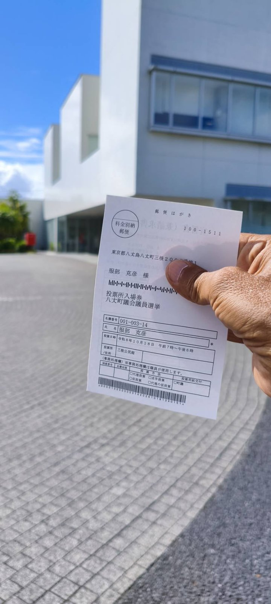

町役場へ行ってきました
町役場へ行ってきました。 福祉課厚生係 廃園になったむつみ保育園の貸し出し要項について 産業課 研修センター復旧具合 坂上地区お水組合のその後 観光課 ミス八丈島 について 教育委員会 富士中学校の移転に関して 企画財政課 二杯目は焼酎条例制定について 建設課 底土海水浴場 通路 スロープ 水道ホース近辺について。 私は 議員でもないし 議会には興味もないが 気づいたこと どうなっているのか？ 事実を知る権利を行使しています。 一町民として 町政に対して 要望を出したり アイデアを出したりするために 各窓口担当者に 聞いています。聞けば親切に教えてくれます。 町役場職員の方々いつも丁寧なご説明ありがとうございます。

町役場 企業課 課長と話した内容。 Q 水道事業は将来スマートメーターの導入はあるか？ A 実証実験で現在一部進行形 ただし 通信費は1箇所1ヶ月に1000円かかる見込み。 地中化しても個別対応なので現実的ではない 年間12000円の通信費と新規水道メーター導入にかかる費用など検証して 費用対効果を考えている途中との事。 感想 自分としては 漏水問題など 老朽化した水道管の取り換え工事予算を計上する方が先だなとは感じた。
企画財政課 担当者に聞きました。 Q 二杯目は焼酎条例は施行は何時で制定目的は何であるか？ また 条例違反は罰則が有るか？ A あくまで 推進する形であり強制ではない 条例違反の罰則もない 島民向けと言うより 観光客向けの 宣伝材料。 焼酎文化と歴史 酒造会社の保護 積極的な促進を目的としている。 感想 条例には必ず例外が有るので この条例も例外を作るべきであると主張しました。
教育委員会 中学校担当者との話し Q 富士中学校の体育館の解体工事が進んでいるが 以前課長に聞いたときには 新築工事は白紙との事だったが現在はどの様に進んでいるか？ A 富士中学校そのものは 各学年1クラス3学年役60名を 三根小学校へ移転させて 校舎の一部を仮説プレハブなどで校庭に新設する。 渡り廊下も作り雨でも濡れないよう配慮する。 移転に関して 保護者には説明会を開いて議会も予算案が可決されている。 体育館は 例えば バスケットボールのゴールは小学生用しか無いので 大賀郷中学校で 富士中と三原中合同での体育授業を行う、移動に関しては町営バスやタクシーなどを利用しているとのこと。 解体した富士中学校の校舎跡はその後の活用方法は未定。 現在老朽化した校舎も今後解体予定との事でした。
議会事務局 事務局長との話し 改めて 条例改正と要項改正についての違いと手順を聞いてきた。 条例改正には 陳情書 請願書などの種類は有るがハードルは高いこと 要項改正に関しては 各位課の窓口で要望できる旨確認した。
建設課 公園係 担当者との話し 以前から要望している底土海水浴場に関して Q その後の計画と予算案について A 現在試行錯誤して 土止めに関して考えている ベストな方法が決定次第来年度の予算案に組み込む方向 とのことでした。 主に トイレに続くコンクリート通路の土止めとヤシの木のホース近辺足場 スロープ入口からの砂の流出に関してです。
観光課 課長との話 ミス八丈島について 今月中にまとまった話を発表できるとのこと ただし 1年交代 1名のみ選出は現在と変わらないことが判明した。 底を根本的に帰るべきとは主張してきた。 ダメだこりゃ・・・。
産業化 係長との話し 研修センターは ハウスの骨組みが損壊したものが有るため 現在修復中 今年度を目標に業者に依頼している 一部八丈フルーツレモンのハウスが壊れてしまい フルーツレモンとしての規格で出荷できないものに関してどの様な形で使用できるか考えているとのこと ビニール張替えで済む所は自らやっていて業者でなくては出来ない部分は依頼をかけている所。 坂上お水組合に関しては 漏水の問題もほぼ解消され現在は各農家に確実に農業用水が届いているとのこと。 こういう地味で話題に上らないようなことをもっとテレビ局や新聞などで報じてもらいたいと個人的には思った。
※ この記事はアメブロからの移行記事です（原文はこちら）